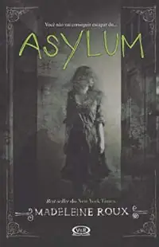
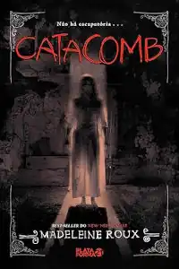

Livros
Rob Stevens | Os Monstros do Cartográfo
/https://skoob.s3.amazonaws.com/livros/199732/OS_MONSTROS_DO_CARTOGRAFO_1322264851B.jpg)
Luiz E. Anelli | Dinos do Brasil
/https://skoob.s3.amazonaws.com/livros/266866/DINOS_DO_BRASIL_1347900478B.jpg)
James Dashner | Maze Runner: Correr ou morrer
Anthon Tchekov | O Assasinato e outras historias
Malala Yousafzai | Eu sou Malala
Melissa Tobias | Realidade de Madhu
Simmone Howell | Garota Imperfeita
Kevin Brooks | Bunker:Diário da Agonia
Arthur Charles Clarke | 2001: Uma Odisseia no Espaço
Fabio Luiz Braggio | Projeto 66
Madeleine Roux | Asylum
Madeleine Roux | Sanctum
Colleen Hoover | É Assim Que Acaba
Colleen Hoover | É Assim Que Começa
Madeleine Roux | Catacomb
Charles Duhigg| O Poder do Hábito
René Barjavel| Devastação (Ou a volta à natureza)
Shirzad Chamine | Inteligência Positiva
Ramon M. Cosenza - Leonor B. Guerra | Neurociência e educação
Anne Frank | O Diário de Anne Frank
Markus Zusak | A Menina Que Roubava Livros
Patti Smith | Só Garotos
Mary Shelley | Frankenstein

Leticia Wierzchowski | O Dragão de Wawel e outras Lendas Polonesas
Andrew Pyper | O Demonologista
Anna Lembke | Nação Dopamina
Piers Paul Read | Os Sobreviventes - A Tragédia dos Andes